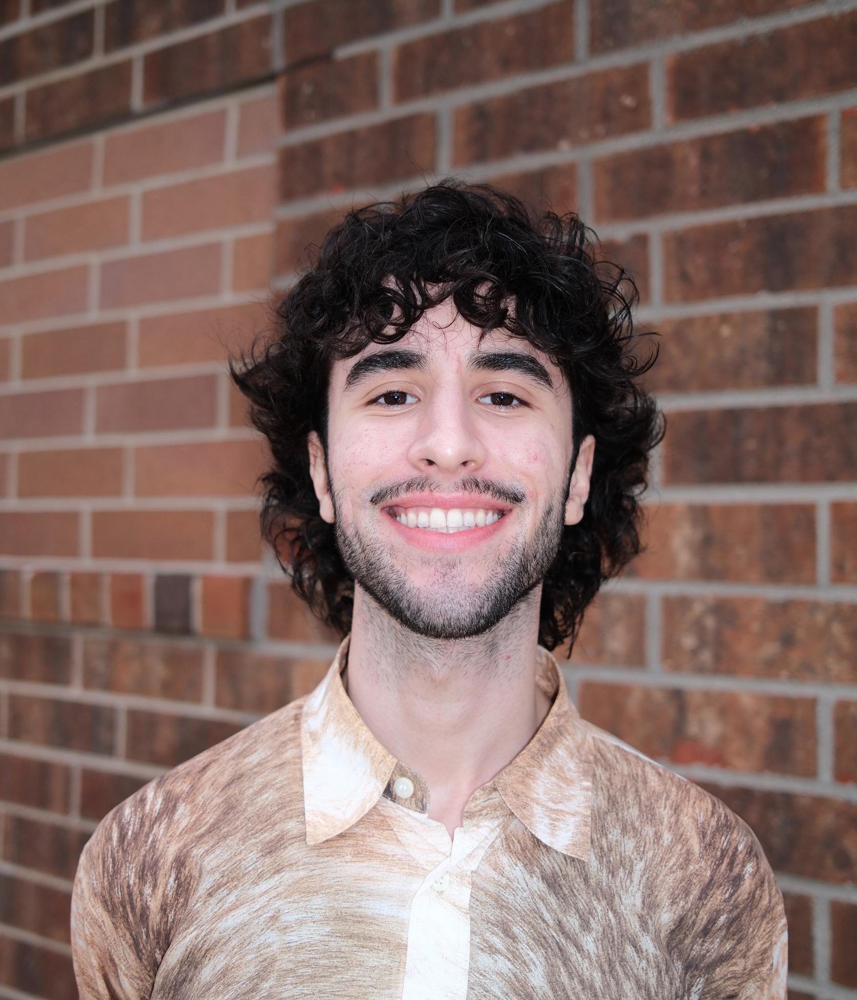

BEYOND THE COURSEWORK
About Me
I am a counselor-in-training, born and raised in Chicago, currently pursuing my M.A. in Clinical Mental Health Counseling at The Chicago School. My upbringing, cultural background, and work in community mental health have shaped both my worldview and the kind of counselor I hope to become.

I was born and raised in Chicago, a city that has played a significant role in shaping who I am. Growing up, I was exposed to the beauty of living among people from different cultures, religions, and backgrounds. At the same time, I became aware of the inequalities that exist throughout the city. Attending protests across Chicago from a young age opened my eyes to the importance of advocacy and social justice. These experiences helped me develop a sense of purpose rooted in leaving a positive impact on the world. I ultimately chose counseling because I believe helping people improve their lives, one person at a time, is one of the most meaningful ways I can contribute to making the world a better place.
My cultural background has also influenced how I understand myself and others. I am half Palestinian and half Scandinavian, and I grew up with both Muslim and Christian influences. Being raised between different cultural and religious perspectives taught me that two seemingly conflicting truths can exist at the same time. I have learned to recognize the gray area between what people often see as black and white. This perspective carries into my approach to counseling. I believe people are shaped by their experiences, identities, and environments, and that understanding someone requires looking beyond our initial assumptions. I try to approach others with curiosity rather than assuming that my understanding of the world is the same as theirs.
For the past two and a half years, I have worked with adolescents experiencing serious mental illnesses at Thresholds, a nonprofit community mental health organization. I have learned that no amount of classroom instruction can fully prepare someone for working in the field. My responsibilities have included working alongside multidisciplinary treatment teams, administering medications, responding to psychiatric crises, and coordinating hospitalizations when necessary. More importantly, I have learned how to connect with adolescents on their level and how trauma can influence their behavior, relationships, and willingness to trust others. Working with underserved populations has also shown me how frequently mental health concerns are complicated by problems within the systems meant to support people.
My clinical experience has continued to develop through my internship at Illinois Masonic Behavioral Health Services, where I provide individual counseling and co-lead three therapeutic groups. This has been my first opportunity to practice psychotherapy, and I have worked with clients ranging in age from 6 to 74, presenting with a wide range of diagnoses and life experiences. The variety of clients I see has given me opportunities to explore different theoretical approaches and interventions. Working within a larger healthcare system has also helped me better understand the challenges of coordinating care and addressing concerns that are influenced by systemic deficiencies. Although counseling cannot resolve every external problem a client faces, I believe it is important to recognize those problems rather than treating everything as an individual issue.
I consider myself an eclectic counselor. Although I tend to conceptualize clients through an existential and humanistic framework, I draw from evidence-based interventions across theoretical orientations, including CBT, ACT, and motivational interviewing. I do not believe any single theory can adequately address every client or presenting concern. I particularly enjoy incorporating creative and strengths-based interventions that allow clients to recognize their existing abilities and explore new ways of approaching their concerns. Above all, I believe the best way to connect with a client is to meet them where they are. I want to continue developing my clinical knowledge while remaining flexible in my approach, recognizing that what works for one person may not work for another.
EXPLORE MY WORK
From Perspective to Practice
The assignments and reflections in this portfolio show how I have begun putting these beliefs into practice.
View CACREP Competencies ↗